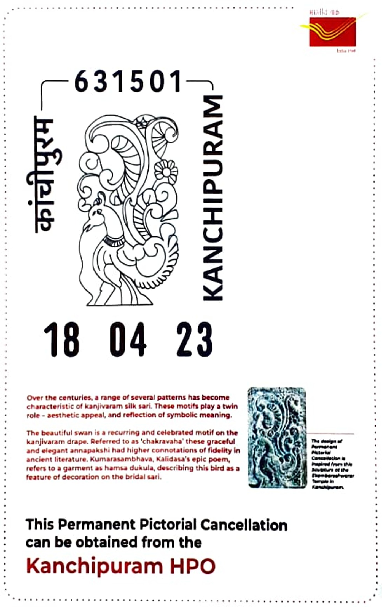

Chakravaha
சக்கரவாகா


The term chakravaka (also rendered chakravaha) derives from Sanskrit, denoting the ruddy shelduck (Tadorna ferruginea), a migratory waterbird long woven into Indian literary imagination as an emblem of marital devotion. According to a recurring folk motif found across Sanskrit poetry and Puranic literature, the chakravaka pair is cursed or fated to spend each night apart, calling plaintively across the water until dawn reunites them. This image of longing followed by joyful reunion made the bird pair a stock metaphor for conjugal fidelity as early as the Atharva Veda, where the chakravaka is invoked as a model of marital constancy during wedding rites, a usage later echoed throughout classical kavya and natya traditions.
As a subject, the chakravaka belongs less to zoology than to the shared vocabulary of symbol and sentiment that recurs across Indian sculpture, textile design, and poetry, where paired birds stand in for themes of devotion, harmony, and auspiciousness. Its association with Kanchipuram is thematic rather than geographic: the town, counted among Hinduism's seven moksha-puri or sacred cities, is renowned both for temple architecture spanning the Pallava, Chola, and Vijayanagara periods and for a silk-weaving tradition in which motifs of paired birds and other symbols of prosperity and fidelity recur in woven and carved ornamentation alike, making the chakravaka a fitting emblem for a place where devotion is expressed equally in stone and in silk.
Kanchipuram's temple architecture, which gives the chakravaka motif its most visible artistic context, took shape over several centuries beginning under Pallava patronage. The Kailasanathar temple, commissioned by the Pallava king Narasimhavarman II (Rajasimha) and completed around 700 CE, ranks among the earliest surviving structural stone temples in South India and set early conventions for Dravidian vimana and gopuram design later elaborated elsewhere. The nearby Ekambareswarar temple, dedicated to Shiva in his earth-linga form, is traditionally dated to around 600 CE under the Pallavas but was substantially rebuilt and enlarged by the Cholas and, in its present form, chiefly by the Vijayanagara rulers, whose patronage produced the tall gopuram and thousand-pillared hall that dominate the complex today.
Within this architectural and artistic milieu, paired-bird imagery of the kind associated with the chakravaka appears as a recurring decorative device in temple carving and in the dense pictorial borders of Kanchipuram silk sarees, alongside other stock motifs such as the yali, the two-headed gandaberunda, peacock-eye (mayilkan) and temple-tower (gopuram) patterns. Kanchipuram silk weaving itself is a centuries-old craft practised by communities who trace their technique to royal and temple patronage, using pure mulberry silk woven with silver thread electroplated in gold; the saree's body and pallu are typically woven separately and joined by the distinctive korvai technique, producing the heavy, contrast-bordered textile for which the town is internationally known.
In recognition of this craft's distinctiveness, the Kanchipuram silk saree received Geographical Indication registration from the Government of India in 2005-06, formally tying the product's name and characteristic weaving methods, including its use of zari and korvai joinery, to production within the Kanchipuram region. The GI framework, administered through the Geographical Indications Registry and supported by local weavers' cooperative societies, continues to govern authentication of genuine Kanchipuram silk production today. Between the chiselled stone of its Pallava and Chola temples and the woven silk of its looms, Kanchipuram sustains the chakravaka as a motif read rather than observed, a literary bird pair whose old promise of nightly separation and dawn reunion still furnishes the town's artisans and temple builders with a shared image of devotion.
| Date of Introduction | April 18, 2023 |
|---|---|
| Address | Senior Postmaster, |
| Kanchipuram HO, | |
| Kanchipuram (dt.), Tamil Nadu - 631501. |